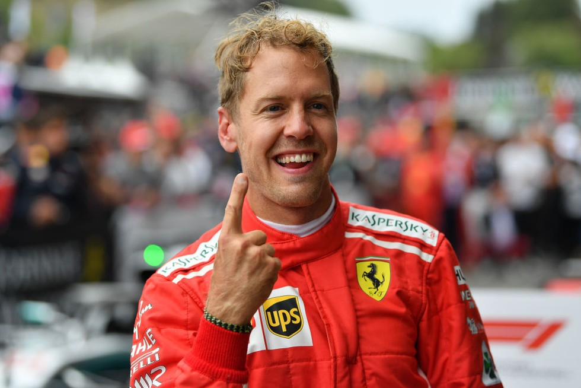

Sebastian Vettel
Formula 1 Driver
4-Time F1 World Champion

About
Sebastian Vettel was an F1 Driver from 2007-2022
He drove for 5 teams: BMW Sauber, Scuderia Toro Rosso,
Scuderia Ferrari, and Aston Martin
He was known as a witty and funny character and was very involved with his teams
Stats
4 F1 World Championships
53 Wins
122 Podiums
57 Pole Positions
38 Fastest Laps
F1 Career
BMW Sauber
2007


Vettel's official F1 Debut came at the Indianapolis
Grand Prix. After qualifying 7th, he finished the race
in 8th. This made him (at the time) the youngest points scorer
in F1 history!
Scuderia Toro Rosso
2007-2008

In spite of his debut with Sauber, he was transferred
to Scuderia Toro Rosso for the remainder of the 2007 season. He
made his deubt with the team at the Hungarian Grand Prix. In the 2007 season, he notably
finished in 4th place at the Shanghai Grand Prix.
In 2008, despite a tough start to the season, he finished in 5h position
at the tight and twisty Monaco Grand Prix. However, his most notable achievement
was winning the Italian Grand Prix. It was wet in qualifying and the race. Despite
that, he started from pole and comfortably won the race. At 21 years of age, he was (at the time) the
youngest F1 Race Winner!
For 2009, he was promoted to the Red Bull Racing Team!
Red Bull Racing
2009-2014

2009 marked the first time that Vettel was challenging for the championship.
He earned his first win and pole position with the team at the Shanghai Grand Prix.
Despite a strong season, he finished runner's up to Jenson Button. In the season, he earned 4 wins,
4 poles, and 8 podiums.

In 2010, he continued his form, winning on tracks like Sepang, Valencia, and Suzuka.
Prior to the season finale at Abu Dhabi, Vettel was 15 points behind championship leader, Fernando Alonso.
In spite of this, he started the final race from pole and won the race. With his performance and poor performances
from his rivals, he won his 1st F1 Drivers' World Champsionship!
In the 2010 season, he earned 5 wins, 10 poles, and 10 podiums

In 2011, Vettel had a very dominant season. The combination of a dominant Red Bull car and Vettel's all-round speed proved to be too good for the rest!
In a season of 19 races, he achieved 11 wins, 15 poles and 17 podiums. With these performances, he achieved his 2nd Drivers' World Championship!

The 2012 season was a much more challenging season for Vettel and his Red Bull Team. The first 8 races had 8 different winners. In those 8 races, Vettel
won 1 race, at the Bahrain Grand Prix.
Prior to the Singapore Grand Prix (the 14th race of the season), Vettel was 39 points behind championship leader, Fernando Alonso.
Singapore marked the real start of his championship comeback. He had a run of 4 straight victories, in Singapore, Japan, South Korea, and India. At this point, he had taken back
the championship lead.
The last couple of races provided Vettel with adversity. In Abu Dhabi, Vettel had to start from the back of the grid, since his car failed to meet fuel regulations in Qualifying.
In spite of this, Vettel went from last to 3rd place, in spite of collisions with Bruno Senna and the DRS board. He collided with the DRS board to avoid crashing into Daniel Ricciardo.
Brazil was the last race of the season. Prior to the race, Vettel was 13 points ahead of Fernando Alonso. The race proved to be extremely challenging for Vettel. At the start of the race,
Vettel was spun round, following a collision with Bruno Senna. However, in spite of the rainy conditions, radio problems, and a damaged car, Vettel brought his car home in 6th place, which won him
the championship by just 3 points!
In the 2012 season, Vettel achieved 5 wins, 6 poles, and 10 podiums. Vettel had now become a 3-time world champion!

The 2013 season was another one of Vettel's dominant seasons. In spite of a solid 1st half of the season, in which he achieved wins at the Malaysian, Bahrain, Canadian, and German Grand Prix.
His dominance really started from the 2nd half of the season.
From the Belgium Grand Prix to the end of the season [9 races], Vettel won the remaining 9 races in a row. He was crowned world champion at the Indian Grand Prix
In the 2013 season, Vettel achieved 13 wins, 9 poles, and 16 podiums. Vettel had now become a 4-time world champion and was the youngest 4-time world champion in F1 history.
At the time, in terms of F1 World Championships, he was only behind Juan Manuel Fangio and Michael Shumacher. It was now clear that Vettel was considered to be among the greatest
in F1 History!

2014 marked a new era of Formula 1. With a brand new set of technical regulations, there was a new dominant team in Formula 1: Mercedes.
Red Bull were no longer the leading F1 team, and this reflected on Vettel's performances. He was also partnered with a new and upcoming talent, Daniel Ricciardo.
Vettel endured a difficult 2014 season. He found it difficult to adapt to this new set of rules and was plagued with reliability issues. For the first time since 2007,
Vettel had a winless season. In the 2014 season, Vettel placed 4th in the F1 World Championship and achived 4 podiums.
At the end of the 2014 season, Vettel announced that from next season onwards, he would be moving to the renowned Scuderia Ferrari!
In Sebastian's time with Red Bull Racing, he achieved 4 World Championships, 38 wins, 44 poles, and 65 podiums!
Scuderia Ferrari
2015-2020


2015 marked the start of his journey with Scuderia Ferrari! 2014 proved to be a tough year for both Vettel and Ferrari. In 2014, Ferrari finished a lowly
4th in the constructors championship
In his debut race with Ferrari, he finished on the podium, coming home in 3rd place. At the Malaysian Grand Prix, Vettel won his first race with Ferrari! In just his
2nd race with the team, Vettel and Ferrari were back to their winning ways!
Further wins came in Hungary and Singapore. In Singapore, he achieved his first pole position with the team and largely dominated the race!
Despite a resurgent season from both Vettel and Ferrari, the car's overall performance was quite behind Mercedes. Nonethless, it was a solid season for both Vettel and the team.
In the 2015 season, Vettel placed 3rd in the F1 World Championship (just 44 points behind 2nd place man, Nico Rosberg). He achieved 3 wins, 1 pole, and 13 podiums. Ferrari placed 2nd
in the Constructors Championship, a notable improvement from 2014.
2016 proved to be an up and down season for Vettel and Ferrari. It was a season filled with strategy errors from Ferrari and some driving mistakes. The car's overall performance
was quite behind Mercedes and at times, even behind Red Bull.
At the season opener in Melbourne, Vettel made a blistering start, jumping both Mercedes cars and lead the race. However, an odd strategy from Ferrari and a slow pitstop ultimately caused
Vettel to finish 3rd in the race. In Canada, just like Melbourne, Vettel made a superb start, jumping both Mercedes cars and lead the race. However, just like Melbourne, Ferrari made the wrong strategy call, causing Vettel
to finish 2nd in the race. He himself also locked up a couple of times at the Wall of Champions Corner.
Overall, the 2016 season proved to be dissapointing for Vettel and Ferrari. Vettel endured another winless season.
In the 2016 season, Vettel placed 4th in the championship and earned 7 podiums.

2017 marked another change in the technical regulations. It helped Ferrari close up the gap to Mercedes.
For much of the season, the car's performance was on par with Mercedes.
Vettel started the season very well, winning the first 2 grand prix, in Australia and Bahrain. At the Russian Grand Prix, Vettel earned his 2nd ever pole with the team. His last pole position
was back in 2015 in Singapore. He also went on to win the Monaco and Hungarian Grand Prix. At the halfway point of the season, Vettel was leading the Drivers Championship and amassed 4 wins.
However, from the second half of the season onwards, Ferrari notably lacked overall performance compared to Mercedes, especially in power-dominant tracks,
and Vettel faced reliability issues with the car.In the Singapore Grand Prix, despite Vettel's fantastic pole position, he was involved in an incident at the start of the race, with teammate, Kimi Raikkonen and Max Verstappen.
This collision was ultimately a racing incident, which was likely caused by poor weather.Vettel faced reliability issues in the Malaysian Grand Prix's qualifying session, forcing him to start the race from last. Although he ended up finishing 4th,
it still increased his championship points deficit.In the Japanese Grand Prix, Vettel faced reliability problems right from the beginning of the race, forcing him
into another retirement.
Despite a pole at the Mexican Grand Prix and victory at the Brazilian Grand Prix, Vettel fell short in his 2017 title quest. In spite of this,
2017 marked a massive improvement. Vettel finished 2nd in the World Championship and achieved 5 wins, 4 poles, and 13 podiums.
About
Sebastian Vettel was an F1 Driver from 2007-2022
He drove for 5 teams: BMW Sauber, Scuderia Toro Rosso, Scuderia Ferrari, and Aston Martin
He was known as a witty and funny character and was very involved with his teams
Stats
4 F1 World Championships
53 Wins
122 Podiums
57 Pole Positions
38 Fastest Laps
F1 Career
BMW Sauber
2007
Vettel's official F1 Debut came at the Indianapolis Grand Prix. After qualifying 7th, he finished the race in 8th. This made him (at the time) the youngest points scorer in F1 history!
Scuderia Toro Rosso
2007-2008
In spite of his debut with Sauber, he was transferred to Scuderia Toro Rosso for the remainder of the 2007 season. He made his deubt with the team at the Hungarian Grand Prix. In the 2007 season, he notably finished in 4th place at the Shanghai Grand Prix.
In 2008, despite a tough start to the season, he finished in 5h position at the tight and twisty Monaco Grand Prix. However, his most notable achievement was winning the Italian Grand Prix. It was wet in qualifying and the race. Despite that, he started from pole and comfortably won the race. At 21 years of age, he was (at the time) the youngest F1 Race Winner!
For 2009, he was promoted to the Red Bull Racing Team!
Red Bull Racing
2009-2014
2009 marked the first time that Vettel was challenging for the championship. He earned his first win and pole position with the team at the Shanghai Grand Prix.
Despite a strong season, he finished runner's up to Jenson Button. In the season, he earned 4 wins, 4 poles, and 8 podiums.
In 2010, he continued his form, winning on tracks like Sepang, Valencia, and Suzuka. Prior to the season finale at Abu Dhabi, Vettel was 15 points behind championship leader, Fernando Alonso.
In spite of this, he started the final race from pole and won the race. With his performance and poor performances from his rivals, he won his 1st F1 Drivers' World Champsionship!
In the 2010 season, he earned 5 wins, 10 poles, and 10 podiums
In 2011, Vettel had a very dominant season. The combination of a dominant Red Bull car and Vettel's all-round speed proved to be too good for the rest!
In a season of 19 races, he achieved 11 wins, 15 poles and 17 podiums. With these performances, he achieved his 2nd Drivers' World Championship!
The 2012 season was a much more challenging season for Vettel and his Red Bull Team. The first 8 races had 8 different winners. In those 8 races, Vettel won 1 race, at the Bahrain Grand Prix.
Prior to the Singapore Grand Prix (the 14th race of the season), Vettel was 39 points behind championship leader, Fernando Alonso. Singapore marked the real start of his championship comeback. He had a run of 4 straight victories, in Singapore, Japan, South Korea, and India. At this point, he had taken back the championship lead.
The last couple of races provided Vettel with adversity. In Abu Dhabi, Vettel had to start from the back of the grid, since his car failed to meet fuel regulations in Qualifying. In spite of this, Vettel went from last to 3rd place, in spite of collisions with Bruno Senna and the DRS board. He collided with the DRS board to avoid crashing into Daniel Ricciardo.
Brazil was the last race of the season. Prior to the race, Vettel was 13 points ahead of Fernando Alonso. The race proved to be extremely challenging for Vettel. At the start of the race, Vettel was spun round, following a collision with Bruno Senna. However, in spite of the rainy conditions, radio problems, and a damaged car, Vettel brought his car home in 6th place, which won him the championship by just 3 points!
In the 2012 season, Vettel achieved 5 wins, 6 poles, and 10 podiums. Vettel had now become a 3-time world champion!
The 2013 season was another one of Vettel's dominant seasons. In spite of a solid 1st half of the season, in which he achieved wins at the Malaysian, Bahrain, Canadian, and German Grand Prix. His dominance really started from the 2nd half of the season.
From the Belgium Grand Prix to the end of the season [9 races], Vettel won the remaining 9 races in a row. He was crowned world champion at the Indian Grand Prix
In the 2013 season, Vettel achieved 13 wins, 9 poles, and 16 podiums. Vettel had now become a 4-time world champion and was the youngest 4-time world champion in F1 history. At the time, in terms of F1 World Championships, he was only behind Juan Manuel Fangio and Michael Shumacher. It was now clear that Vettel was considered to be among the greatest in F1 History!
2014 marked a new era of Formula 1. With a brand new set of technical regulations, there was a new dominant team in Formula 1: Mercedes. Red Bull were no longer the leading F1 team, and this reflected on Vettel's performances. He was also partnered with a new and upcoming talent, Daniel Ricciardo.
Vettel endured a difficult 2014 season. He found it difficult to adapt to this new set of rules and was plagued with reliability issues. For the first time since 2007, Vettel had a winless season. In the 2014 season, Vettel placed 4th in the F1 World Championship and achived 4 podiums.
At the end of the 2014 season, Vettel announced that from next season onwards, he would be moving to the renowned Scuderia Ferrari!
In Sebastian's time with Red Bull Racing, he achieved 4 World Championships, 38 wins, 44 poles, and 65 podiums!
Scuderia Ferrari
2015-2020
2015 marked the start of his journey with Scuderia Ferrari! 2014 proved to be a tough year for both Vettel and Ferrari. In 2014, Ferrari finished a lowly 4th in the constructors championship
In his debut race with Ferrari, he finished on the podium, coming home in 3rd place. At the Malaysian Grand Prix, Vettel won his first race with Ferrari! In just his 2nd race with the team, Vettel and Ferrari were back to their winning ways!
Further wins came in Hungary and Singapore. In Singapore, he achieved his first pole position with the team and largely dominated the race!
Despite a resurgent season from both Vettel and Ferrari, the car's overall performance was quite behind Mercedes. Nonethless, it was a solid season for both Vettel and the team. In the 2015 season, Vettel placed 3rd in the F1 World Championship (just 44 points behind 2nd place man, Nico Rosberg). He achieved 3 wins, 1 pole, and 13 podiums. Ferrari placed 2nd in the Constructors Championship, a notable improvement from 2014.
2016 proved to be an up and down season for Vettel and Ferrari. It was a season filled with strategy errors from Ferrari and some driving mistakes. The car's overall performance was quite behind Mercedes and at times, even behind Red Bull.
At the season opener in Melbourne, Vettel made a blistering start, jumping both Mercedes cars and lead the race. However, an odd strategy from Ferrari and a slow pitstop ultimately caused Vettel to finish 3rd in the race. In Canada, just like Melbourne, Vettel made a superb start, jumping both Mercedes cars and lead the race. However, just like Melbourne, Ferrari made the wrong strategy call, causing Vettel to finish 2nd in the race. He himself also locked up a couple of times at the Wall of Champions Corner.
Overall, the 2016 season proved to be dissapointing for Vettel and Ferrari. Vettel endured another winless season. In the 2016 season, Vettel placed 4th in the championship and earned 7 podiums.
2017 marked another change in the technical regulations. It helped Ferrari close up the gap to Mercedes. For much of the season, the car's performance was on par with Mercedes.
Vettel started the season very well, winning the first 2 grand prix, in Australia and Bahrain. At the Russian Grand Prix, Vettel earned his 2nd ever pole with the team. His last pole position was back in 2015 in Singapore. He also went on to win the Monaco and Hungarian Grand Prix. At the halfway point of the season, Vettel was leading the Drivers Championship and amassed 4 wins.
However, from the second half of the season onwards, Ferrari notably lacked overall performance compared to Mercedes, especially in power-dominant tracks, and Vettel faced reliability issues with the car.In the Singapore Grand Prix, despite Vettel's fantastic pole position, he was involved in an incident at the start of the race, with teammate, Kimi Raikkonen and Max Verstappen. This collision was ultimately a racing incident, which was likely caused by poor weather.Vettel faced reliability issues in the Malaysian Grand Prix's qualifying session, forcing him to start the race from last. Although he ended up finishing 4th, it still increased his championship points deficit.In the Japanese Grand Prix, Vettel faced reliability problems right from the beginning of the race, forcing him into another retirement.
Despite a pole at the Mexican Grand Prix and victory at the Brazilian Grand Prix, Vettel fell short in his 2017 title quest. In spite of this, 2017 marked a massive improvement. Vettel finished 2nd in the World Championship and achieved 5 wins, 4 poles, and 13 podiums.